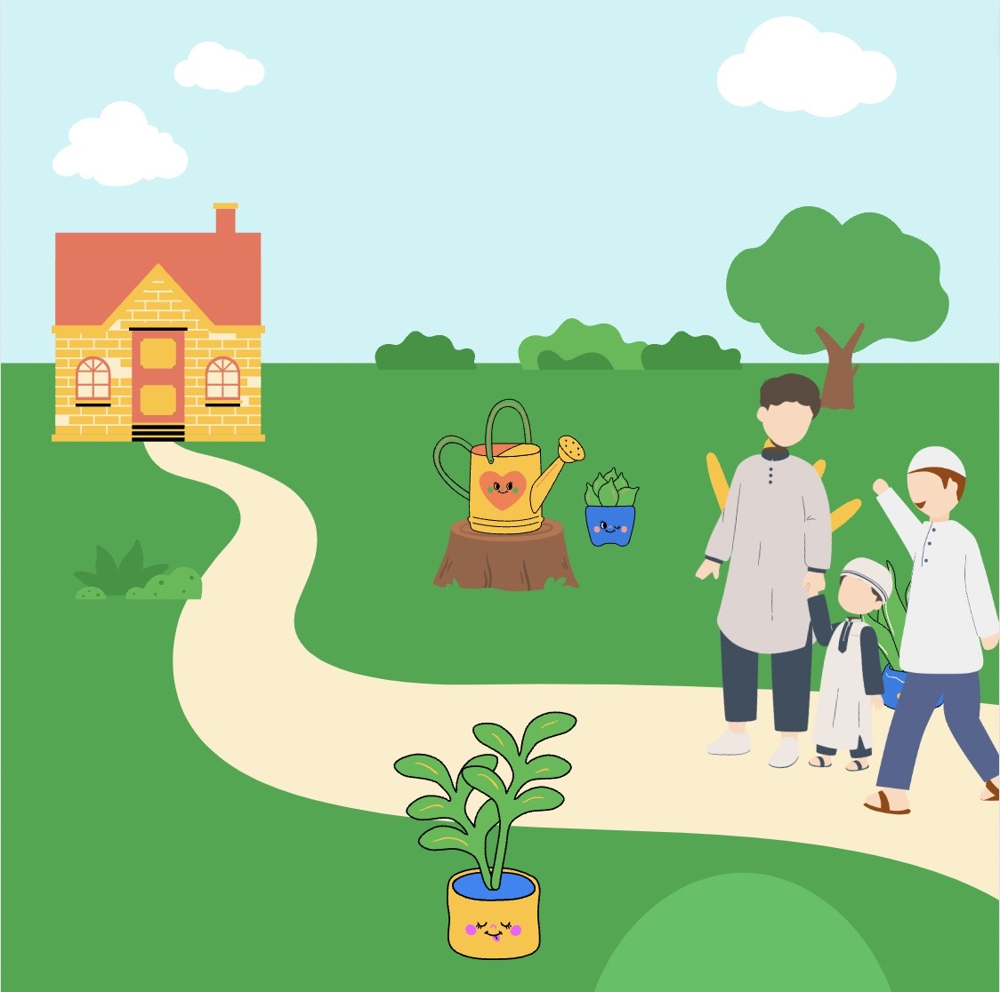

Chapter 1: Treat All Children Fairly

Once upon a time,in the city of Medina, there lived a man named Bashir. Bashir was a loyal follower of the Prophet Muhammad (pbuh) and greatly respected his teachings.

one day, he decided to approach the Holy Prophet with a unique request. He took his youngest son, Nu'maan, and a servant along with him.They reached the Prophet's home and greeted him respectfully.

O Prophet of Allah, I have given one of my servants
as a gift to my dear son Nu'maan.
Will you please be our witness?
as a gift to my dear son Nu'maan.
Will you please be our witness?
Bashir, my dear companion,
have you given a similar gift to
your other sons as well?
have you given a similar gift to
your other sons as well?

O Prophet of Allah,
I haven't given such a gift to my other sons
I haven't given such a gift to my other sons
I cannot be witness to such
an unjust act to Bashir,
it is important to treat all your
children equally.
Giving one son a special gift while
not doing the same for others is not fair.
an unjust act to Bashir,
it is important to treat all your
children equally.
Giving one son a special gift while
not doing the same for others is not fair.

Bashir realized his mistake and felt remorseful. He understood that his actions were unjust. He thanked the Holy Prophet for his guidance and promised to make amends. From that day forward, Bashir decided to give a special gift to each of his sons and they were overjoyed with their gifts. They lived harmoniously, and treated everyone equally, regardless of their differences.
Chapter 2: Affection For Children

Once upon a time, in a peaceful town, there lived a kind and gentle man named Ahmad. Ahmad was known as a companion of the Holy Prophet, and he learned many valuable lessons from Prophet Muhammad

One sunny day, as Ahmad was walking through the town, he noticed two little boys playing in the park. They reminded him of the Holy Prophet's grandson, Hasan seated on his right thigh while Usama, the son of his freed slave Zaid, seated on his left thigh. He would embrace both of them lovingly and supplicate, ‘O Lord! Shower Thy Mercy and Grace on both of them.’ grandsons, Hasan and Usama.

Filled with warmth in his heart, Ahmad approached the boys and greeted them with a smile. He picked them up, just like the Holy Prophet used to do. The boys giggled with joy as Ahmad cuddled and kissed them affectionately.

A wise Bedouin, who was passing by, observed Ahmad's loving actions towards the children.saying,
Dear Ahmad, we have never shown such affection to our children like you do. Why are you so kind and loving?

the Holy Prophet taught me the importance of showing love and mercy to children. They are a gift from Allah, and it is our duty to care for them with kindness
But what if we are not used to showing love and mercy to our children?

If you feel deprived of love and mercy for your children, it is never too late to start. Begin by embracing them, spending time together, and showing them that you care. Little acts of kindness can make a big difference. I have a story about Prophet Muhammad

A young mother approached Prophet Muhammad with her adorable baby in her arms and wanted her baby to receive his blessings.

Prophet Muhammad smiled warmly and gently took the baby in his arms. He softly prayed for the baby's well-being, asking for Allah's blessings to shower upon the little one. As he held the baby close, suddenly the baby wetted.
but Prophet Muhammad didn't mind at all. He understood that accidents happen, especially with babies. He remained calm and continued to hold the baby lovingly.
Deeply caring for the well-being of others, prophet Muhammad realized that his clothes had become wet. Without a second thought, he excused himself and went to wash his clothes, ensuring he remained clean and comfortable.
Can you feel how Prophet Muhammad showed his kindness and willingness to put the needs of others before his own.
I inspired by the words and that story. I realized that it was never too late to learn and grow in love.

From that day forward, the Bedouin vowed to be more loving and compassionate towards his own child and other kids.
Guess the word related to the story:
Love
Kindness
Affection
Mercy
Guess the word related to the story:
Love
Kindness
Affection
Mercy
Guess the word related to the story:
Love
Kindness
Affection
Mercy
Guess the word related to the story:
Love
Kindness
Affection
Mercy
Guess the word related to the story:
Love
Kindness
Affection
Mercy
Chapter 3: Consideration Towards Children

One sunny day, a poor woman with her two kids came to Aisyah's(wife of Prophet Muhammad) house seeking help because of their desperate situation to survive.

Aisyah wanted to do something to ease their hardship. Looking something in her house, she had nothing in the house to give to her except dates. She knew it wasn't much, but she believed in the power of kindness, no matter how small the gesture. She gave the three dates to the poor woman.

The poor woman gave one date to each of her children. But when she raised the third date to her own mouth, her children asked for it again, their eyes full of longing. Without hesitation,she broke the date into two halves and gave half to one and the other half to the other. She wanted to make sure her children didn't feel left out or hungry.

After the woman going out, Prophet Muhammad returned home. Aisyah was amazed by the woman's sacrifice and shared the story with the Prophet Muhammad . When he heard of the woman's selflessness, he said "Allah will bestow paradise upon that woman for her consideration and love towards her daughters."
| A | P | P | L | E | A | P | P | L | E |
| B | A | N | A | N | A | P | P | L | E |
| C | A | T | A | P | P | L | E | ||
| D | O | G | A | P | P | L | E | ||
| D | O | G | A | P | P | L | E | ||
| D | O | G | A | P | P | L | E | ||
| D | O | G | A | P | P | L | E |
Word List:
- smsmmdslalas,a,d
- BANANA
- CAT
- DOG
Quiz
Q1. What was Bashir's request to the Prohet Muhammad ?
Q2. How did Prophet Muhammad respond to Bashir?
Q3. What did the Prophet Muhammad inquire about regarding Bashir's other sons ?
Q4. How did Bashir feel after understanding his mistake?
Q5. What lesson did Bashir learn and share with his sons ?